Activity: Applying a relationship to all faces in a select set
Learn how to use the relationship commands to apply the same relationship to each face in the select set.
Click here to download the activity file.
If you are using Internet Explorer and a video is not displaying in your training guide, click the Tools tab (or gear icon)→Compatibility View settings, and then clear the selection of Display intranet sites in Compatibility View.
Open independent.par.
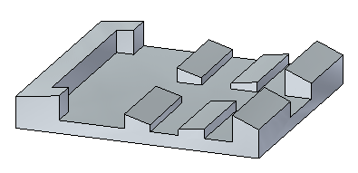
Make all green faces parallel to the yellow face.
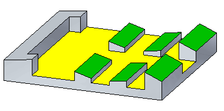
Both top planes in each row are coplanar. Because the coplanar relationships are recognized, only one face needs be selected for each row.
Select the faces as shown.
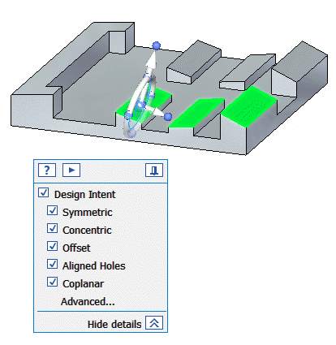
Make sure the Design Intent settings match the illustration. If they do not, click Advanced. On the Design Intent panel, click Restore .
On the Home tab→Face Relate group, choose the Parallel relationship command .
On the command bar, select the Multiple Align option  .
.
On the command bar, deselect the Persist option  .
.
Select the face shown.
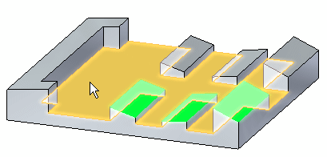
Notice that all selected faces are now parallel to the target face. Accept the results by clicking the Accept button.
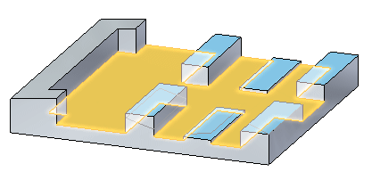
Press the Escape key to clear the select set.
Make all rows the same height as the shortest one.
Select the faces shown.
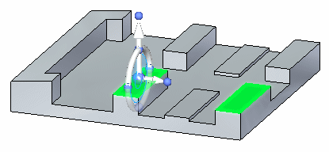
On the Home tab→Face Relate group, choose the Coplanar relationship command .
On the command bar, select the Multiple Align option  .
.
Select the target face.
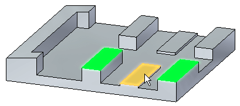
Accept the results and end the command.
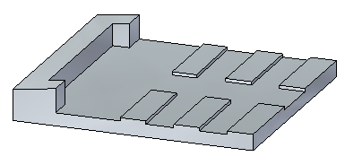
Make all faces coplanar with the inclined face on the left end.
Select the face shown. Since the coplanar is recognized by its design intent, the other faces are included in the coplanar relationship operation.
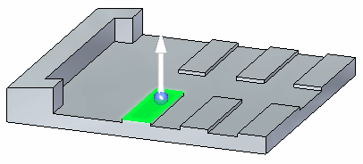
On the Home tab→Face Relate group, choose the Coplanar relationship command .
On command bar, select the Single Align option .
Select the target face.
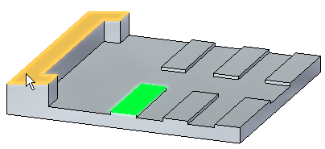
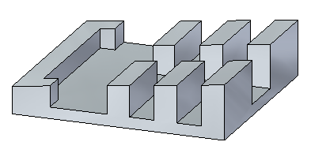
Accept results and end the Coplanar command.
In this activity you learned how to use the relationship commands to apply a relationship to each face in a select set. You also learned how to take advantage of the recognized design intent that has been built into the model so every face to be included does not have to be selected.
Close the file and do not save.
Click the Close button in the upper-right corner of the activity window.